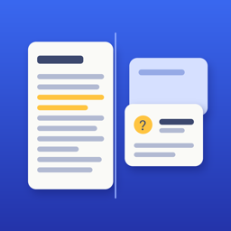

CramDesk
PDF to Flashcards · Exam prep
Open a PDF, pick a page, get flashcards from that page — on your device. The page sits next to its cards, so you always see where a card came from. Spaced repetition plans your daily review. No account, no quotas, works offline.
Support
Questions, bugs or ideas: mrsahinrasit@gmail.com. We usually reply within two days.
FAQ
Which devices make cards automatically?
On-device card generation needs Apple Intelligence (iPhone 15 Pro and later, iPad with M1 and later) with Apple Intelligence turned on. Other devices make fill-in-the-blank cards; reading PDFs, writing your own cards and review work everywhere.
What is free?
3 PDFs and 10 cards per PDF, with unlimited review. CramDesk Pro unlocks unlimited PDFs and cards, the exam countdown, the Lock Screen widget and export.
How do I restore my purchase?
Settings → Restore purchases, signed in with the same Apple Account.
How do I cancel the monthly plan?
Settings → Manage subscription in the app, or your Apple Account subscriptions in the Settings app.
Where are my cards stored?
On your device and in your own iCloud. See the privacy policy.
Türkçe
PDF ders notunu aç, bir sayfa seç, o sayfadan bilgi kartları cihazında üretilsin. Ücretsiz sürümde 3 PDF ve PDF başına 10 kart var; Pro ile sınırsız PDF ve kart, sınav geri sayımı, kilit ekranı widget'ı ve dışa aktarma açılır. Destek: mrsahinrasit@gmail.com